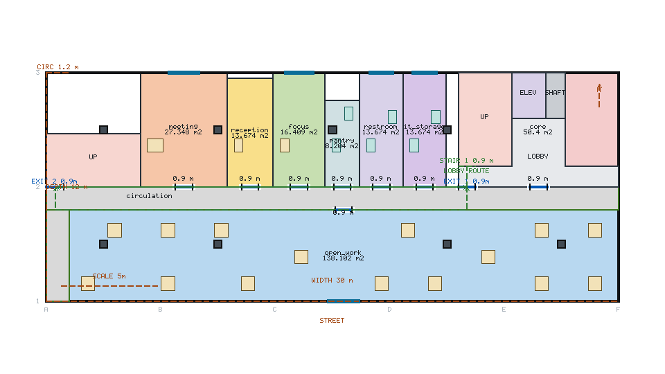

같은 mass, 같은 floor 2, 로컬 Qwen3-4B. 이전에는 2안이 동일 형상으로 제거됐고 이후에는 2개 형상이 유지됩니다.
이전
accepted 1/2 · distinct 1/2
topology-2 duplicate discarded

이후 1안
score 0.9203 · hard violations 0
fingerprint 1e86662500118fdc

이후 2안
score 0.8895 · hard violations 0
fingerprint 1bfcb937990df8b4